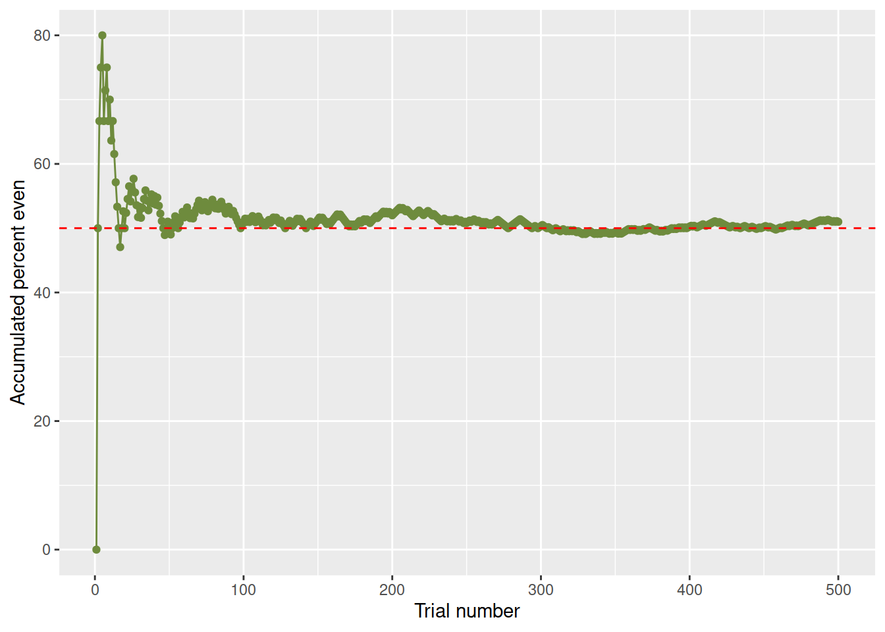

LEARNING OBJECTIVES
Think about flipping a coin once. Can you predict the outcome?
Think about flipping a coin many times, one million say. Are you able to predict roughly how many heads or tails will show up?
It’s hard to guess the outcome of just one coin flip because the outcome could be one of two possible outcomes. Hence, we say that flipping a coin is a random experiment or random process.
If you flip it over and over, however, you can predict the proportion of heads you’re likely to see in the long run. In the long run simply means if you were to repeat the same experiment over and over many times under the same conditions.
This discussion leads us to define the specific type of randomness that we will be studying in this course.
What is randomness?
We will say that a repeatable process is random if its outcome is
It is this long-term predictability of randomness that we will use throughout the rest of the course. To do that, we will need to talk about the probabilities of different outcomes and learn some rules for dealing with them.
Please watch the following video, explaining you to the concept of “randomness”.
The process of flipping a coin is an example of a random experiment as its outcome is uncertain. We do not know beforehand whether the coin will land heads (H) or tails (T).
The collection of all possible outcomes is known as the outcome space or sample space. We typically denote the sample space by \(S\). In the coin example, this is: \[ S = \{ H, T \} \]
One particular repetition (i.e. instance) of such experiment is known as a trial.
Another example of a random experiment is throwing a six-faced die as, for each trial, we can not exactly predict which face will appear.
The list of possible outcomes for the die experiment is \(1, 2, ..., 6\). Hence, the sample space can be written: \[ S = \{1, 2, 3, 4, 5, 6 \} \]
Consider again the die experiment. Often, we are not interested in the probability of observing a particular outcome, such as 3, but rather in a collection of outcomes together. For example, we might be interested in the probability of observing an even number.
Such collections of outcomes are called events. More formally, an event is a set of outcomes.
Each individual outcome is also considered an event. To distinguish, some people call simple events the individual outcomes, and compound events a collection of two or more outcomes.
The event “an even number appears” is simply the collection of even outcomes. We could call it “E” for “even” and write it as: \[E = \{ 2, 4, 6\}\]
Two important events are:
In general, a finite sample space is written \[ S = \{s_1, s_2, ..., s_n\} \]
where each \(s_i\) represents an outcome or simple event.
Consider flipping 2 coins simultaneously. The sample space is: \[ S = \{ (H,H), (H,T), (T,H), (T,T)\} \]
Typical events could be:
Consider repeating the random process of throwing a die many times, 500 say, and recording whether or not an even number appears. We will now create a table listing the result of each trial.
First, we load the tidyverse package:
library(tidyverse)Next, we create the sample space:
S <- 1:6
S## [1] 1 2 3 4 5 6The following code defines the event “an even number appears”:
E <- c(2, 4, 6)
E## [1] 2 4 6Say, now, that the outcome of a roll is 3. How can we check whether the outcome belongs to the event of interest \(E\)?
We can use the %in% function to ask R: “Is 3 in E?” The answer can be
TRUE or FALSE.
3 %in% E## [1] FALSESuppose instead, that the outcome of a roll is 2. Is 2 in E?
4 %in% E## [1] TRUEWe now specify how many trials we will be performing:
num_trials <- 500Next, we repeat the experiment num_trials times and compute the
accumulated percentage of even outcomes:
experiment <- tibble(
trial = 1:num_trials,
outcome = sample(S, num_trials, replace = TRUE),
is_even = outcome %in% E,
cumul_even = cumsum(is_even),
cumul_perc_even = 100 * cumsum(is_even) / trial
)The following code displays the top 10 rows of the experiment:
head(experiment, n = 10)## # A tibble: 10 x 5
## trial outcome is_even cumul_even cumul_perc_even
## <int> <int> <lgl> <int> <dbl>
## 1 1 5 FALSE 0 0
## 2 2 2 TRUE 1 50
## 3 3 4 TRUE 2 66.7
## 4 4 4 TRUE 3 75
## 5 5 2 TRUE 4 80
## 6 6 3 FALSE 4 66.7
## 7 7 4 TRUE 5 71.4
## 8 8 2 TRUE 6 75
## 9 9 5 FALSE 6 66.7
## 10 10 2 TRUE 7 70Understanding the code. Let’s inspect each column in turn:
trial records the number of each trial: 1, 2, …, 500;outcome lists the result of each trial: 1, or 2, …, or 6;is_even checks whether the outcome of each trial belongs to the
event \(E\) (=TRUE) or not (=FALSE);cumul_even computes the cumulative sum of is_even.As we saw, the is_even column contains either TRUE or FALSE. This was
created with the function %in%, which is equivalent to asking a
question: Is the outcome in \(E\)? The result will be either TRUE or
FALSE. We note that, when summed, R considers a TRUE as 1, and a FALSE
as 0. For example, the cumulative sum of
c(TRUE, FALSE, TRUE, TRUE, FALSE) is c(1, 1, 2, 3, 3). Finally, the
column cumul_perc_even computes the accumulate percentage of even
outcomes.
The first trial’s outcome was 5, which is not an even number. Hence the cumulative percentage of even outcomes is 0 out of 100, or 0%. The next four trials lead to 2, 4, 4, and 2 respectively, which all are even numbers. The cumulative percentages will be 1 out of 2 (50%), 2 out of 3 (66.67%), 3 out of 4 (75%), and 4 out of 5 (80%). Next, we observe 3, which is odd, hence the cumulative percentage of even outcomes is now 4 out of 66.67%, and so on.
Finally, we plot the accumulated percentage of even numbers against the trial number:
ggplot(experiment, aes(x = trial,
y = cumul_perc_even)) +
geom_point(color = 'darkolivegreen4') +
geom_line(color = 'darkolivegreen4') +
geom_hline(aes(yintercept = 50), color = 'red', linetype = 2) +
labs(x = "Trial number", y = "Accumulated percent even")
As the number of trials increase, we see that the curve approaches 50%, which is 0.5, and that the cumulative percentage of even outcomes keeps fluctuating around 50%.
What’s the probability of obtaining an even number when throwing a fair die?
Based on the graph, it looks like the relative frequency of an even number settles down to about 50%, so saying that the probability is about 0.5 seems like a reasonable answer.
But do random experiments always behave well enough for this definition of probability to always apply? Perhaps the relative frequency of an event can bounce back and forth between two values forever, never settling on just one number?
Fortunately, Jacob Bernoulli proved the Law of large numbers (LLN) in the 18th century, giving us the peace of mind that we need.
Law of large numbers
The law of large numbers (LLN) states that as we repeat a random experiment over and over, the proportion of times that an event occurs does settle down to a single number. We call this number the probability of that event.
However, it is not that simple. The LLN requires two key assumptions:
For the die experiment, we can now write that the probability of observing an even number is 0.5 as follows. First, we need to define the event of interest, \(E = \{2, 4, 6\}\), and then we can write: \[ P(E) = 0.5 \]
If you do not give a name to the event, you must specify it inside of the parentheses. Note the use of round parentheses for probability \(P()\) and the curly brackets to list the outcomes of interest. \[ P(\{2, 4, 6\}) = 0.5 \]
We reached this definition of the probability of the event \(E\). In the long run, \[ P(E) = \frac{\text{number of times outcome was in the event } E}{\text{total number of trials}} \]
NOTATION
We typically use the first few capital letters of the alphabet to name events. The letter \(P\) will always be reserved for probability.
When we write \(P(A) = 0.5\) we mean “the probability of the event \(A\) is 0.5”.
We use proportions (or decimal numbers) when reporting probability values in a formal situation like writing a report or a paper. However, when discussing probability informally, we often use percentages.
You might have heard from friends or TV shows that sometimes the random experiment “owes” you a particular outcome. Let’s try to entangle this in more detail and understand where the pitfall of this reasoning is.
The law of large numbers tells us that the probability of an event is the proportion of times we would observe it in the long run. The long run is really long - infinitely long. We, as humans and finite entities, can not generate an infinitely long sequence of trials and memorise it.
Many people believe that if you flip a fair coin, where fair means that the chance of getting heads is the same as the chance of getting tails (0.5) we expect the coin to “even out” the results in the coming trials if heads has not appeared in the recent ones.
Say, for example, that in 10 trials you only observed 1 head. This is quite a low proportion, 0.1 (1 out of 10) compared to the 0.5 (5 out of 10) that the player expected. Does this mean that the coin due to show heads in the near future, as the coin “owes” us some heads to even out the proportions?
The answer is no.
The long run means that the proportions will eventually even out in the infinite sequence of trials, but you will not know when this happens and there is absolutely no requirement for the coin to show heads again in the upcoming trials in order to keep a probability of 0.5.
To assign a probability value to different events, we should make sure that these coherence principles are satisfied:
Rule 1: Probability assignment rule
The probability of an impossible event (an event which never occurs) is 0 and the probability of a certain event (an event which always occurs) is 1.
Hence, we have that the probability is a number between 0 and 1: \[\text{for any event }A, \\ 0 \leq P(A) \leq 1\]
Rule 2: Total probability rule
If an experiment has a single possible outcome, it is not random as that outcome will happen with certainty (i.e. probability 1).
When dealing with two or more possible outcomes, we need to be sure to distribute the entire probability among all of the possible outcomes in the sample space \(S\).
The sample space must have probability 1: \[P(S) = 1\]
It must be that the will observe one of the outcomes listed within the collection of all possible outcomes of the experiment.
Rule 3: Complement rule
If the probability of observing the face “2” in a die is 1/6 = 0.17, what’s the probability of not observing the face “2”? It must be 1 - 1/6 = 5/6 = 0.83.
If \(A = \{2\}\), the event not A is written \(\sim A\), which is a shortcut for \(S\) without \(A\), that is \(\{1, 3, 4, 5, 6\}\).
\[P(\sim A) = 1 - P(A)\]
Rule 4: Addition rule for disjoint events
Suppose the probability that a randomly picked person in a town is \(A\) = “a high school student” is \(P(A) = 0.3\) and that the probability of being \(B\) = “a university student” is \(P(B) = 0.5\).
What is the probability that a randomly picked person from the town is either a high school student or a university student? We write the event “either A or B” as \(A \cup B\), pronounced “A union B”.
If you said 0.8, because it is 0.3 + 0.5, then you just applied the addition rule: \[ \text{If }A \text{ and } B \text{ are mutually exclusive events,}\\ P(A \cup B) = P(A) + P(B) \]
Rule 5: Multiplication rule for independent events
We saw that probability of observing an even number (\(E\)) when throwing a die is 0.5.
You also know that the probability of observing heads (\(H\)) when throwing a fair coin is 0.5.
What’s the probability of observing an even number and heads (that is, \(E\) and \(H\), written \(E \cap H\)) when throwing both items together?
The rule simply says that in this case we multiply the two probabilities together: 0.5 * 0.5 = 0.25.
The multiplication rule for independent events says: \[ \text{If }A \text{ and } B \text{ are independent events,}\\ P(A \cap B) = P(A) \times P(B) \]
Consider a sample space of \(n\) outcomes
\[ S = \{s_1, s_2, \dots, s_n \} \]
and suppose these are all equally likely, with \(p\) denoting the probability of each outcome: \[ P(\{s_1\}) = P(\{s_2\}) = \cdots = P(\{s_n\}) = p \]
As the outcomes in the sample space are mutually exclusive events,1 we can compute the probability of the sample space as
\[ 1 = P(S) = P(\{s_1\}) + P(\{s_2\}) + \cdots + P(\{s_n\}) = p + p + \cdots + p = n p \]
which leads to \[ p = P(\{s_i\}) = \frac{1}{n} \]
Next, consider an event \(A\) comprising a few of the outcomes from \(S\)
\[ A = \{s_2, s_5, s_9\} \] which can be also written as the union of disjoint events
\[ A = \{s_2\} \cup \{s_5\} \cup \{s_9\} \]
We can compute the probability of \(A\) as follows
\[ \begin{aligned} P(A) &= P(\{s_2\}) + P(\{s_5\}) + P(\{s_9\}) \\ &= p + p + p \\ &= 3 p \\ &= 3 \left(\frac{1}{n}\right) \\ &= \frac{3}{n} \\ &= \frac{n_A}{n} \\ &= \frac{\text{number of outcomes within }A}{\text{number of possible outcomes}} \end{aligned} \] where \(n_A\) is the number of outcomes within \(A\) and \(n\) is the total number of possible outcomes in \(S\).
Sample spaces. For each of the following experiments list the sample space and tell whether you think the outcomes are equally likely or not.
Rolling a die. Consider rolling a six-sided die. Recall that each of the die’s six faces (1-6) are equally likely to occur, meaning that each has a long-run probability of 1/6.
Relate the terms trial, outcome, event, and sample space to a single roll of a die die. Provide an example of each.
Consider again rolling a six-sided die. State whether each of the following is a simple or a compound event. Next, calculate the corresponding probability either by directly listing the involved outcomes or by applying the probability rules (addition rule, complement rule, multiplication rule).
Playing cards. Consider a standard deck of 52 playing cards. These are shown in the diagram below:
Figure 1: Example set of 52 playing cards; 13 of each suit clubs, diamonds, hearts, and spades. Source: Wikipedia (https://en.wikipedia.org/wiki/Standard_52-card_deck)
Relate the terms trial, outcome, event, and sample space to a single draw from a standard deck of cards. Provide an example of each.
Load the TipJoke.csv data into R and call it tipjoke.
Recode the Tip variable so that
Make sure that categorical variables are correctly encoded as factors.
Define the sample space for the card tipping experiment.
Create a contingency table displaying how many customers who were given no card, a a joke card, or an advertisement card left a tip or not.
Transform the table of counts to a relative frequency table.
Do the numbers in the table satisfy the requirements of probabilities?
Display the relative frequency table as a mosaic plot and comment on what it highlights.
The proportions computed above can be considered as the probabilities for a person randomly drawn from the participants in the experiment.
Using the proportions table compute above,
Can telling a joke affect whether or not a waiter in a coffee bar receives a tip from a customer?
To be continued next week…